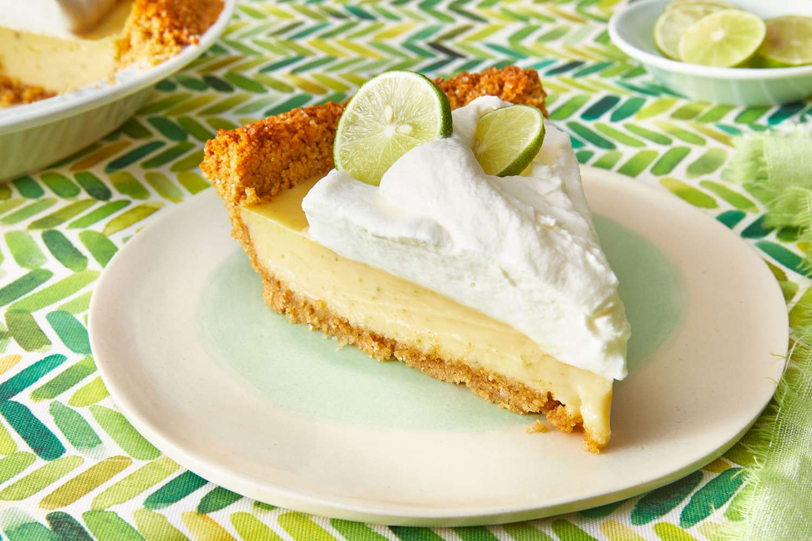

Mom's Key Lime Pie

This is my mom's key lime pie. It is a tradition for her to bring me home one every
birthday of mine. It's from a restaurant in Longboat Key.
Ingredients: (These Serve as Placeholders)
1 ½ cups graham cracker crumbs (about 10-12 full sheets)
6 tablespoons unsalted butter, melted
1 can (14 ounces) sweetened condensed milk
½ cup Key lime juice (freshly squeezed if possible)
1 tablespoon Key lime zest
1 cup heavy whipping cream
2 tablespoons powdered sugar
½ teaspoon vanilla extract
Steps: (These Serve as Placeholders)
Travel to Florida with the specific purpose of securing the pie.
Arrive to the restaurant and buy one whole key lime pie. Have the crew
box it up for you.
Drive back to your residence and refrigerate the pie until departure.
Make it work and somehow utilize your motherly magic to bring it
home safe and sound to your son.
Please visit ChatGPT for the remainder of the instructions.
Home